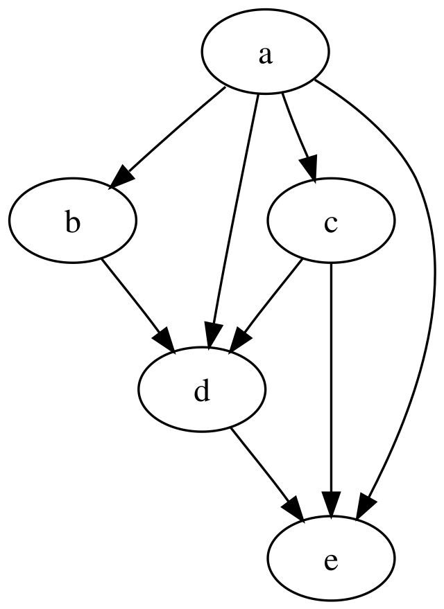
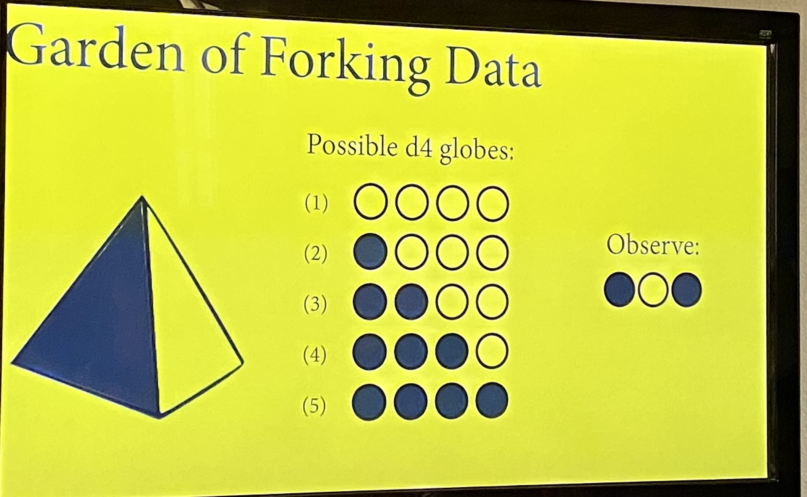
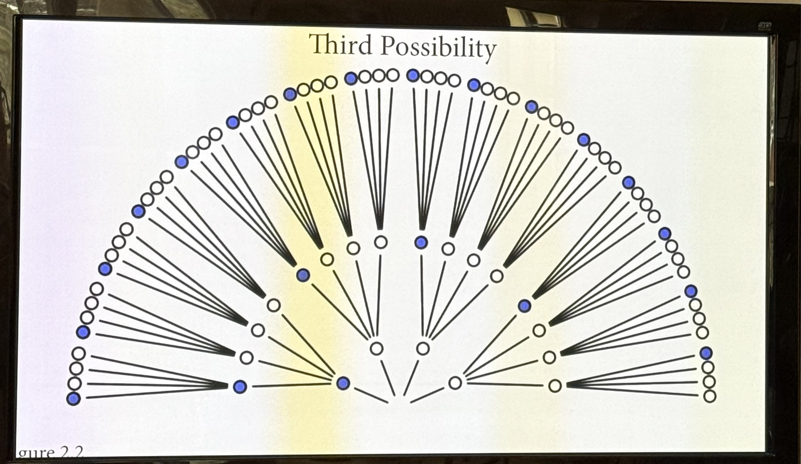
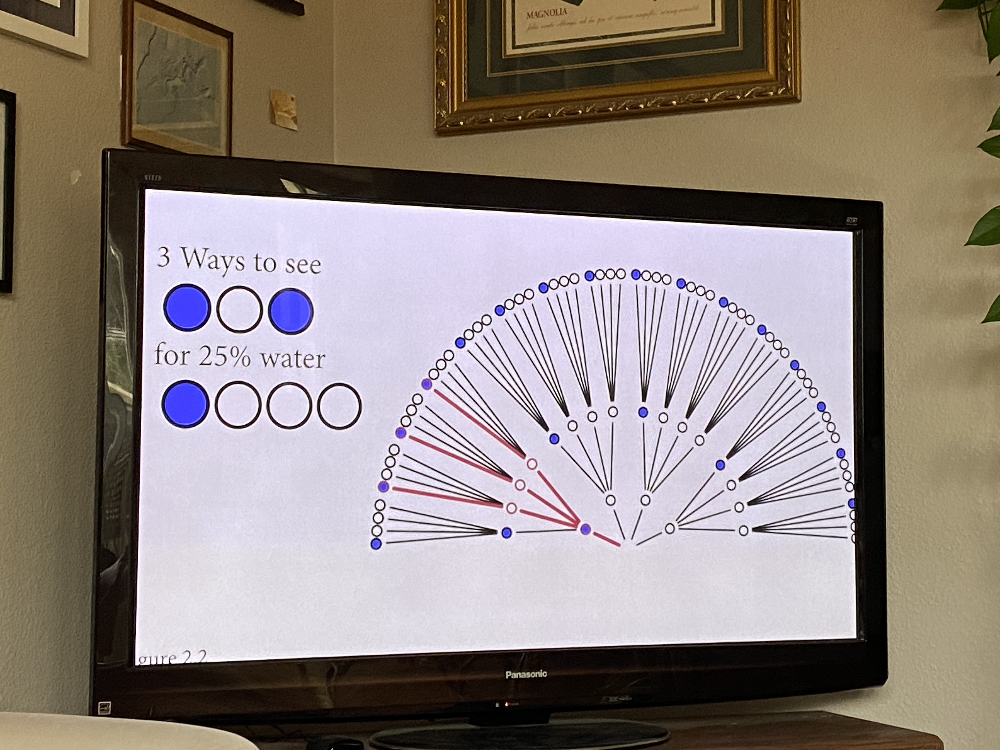
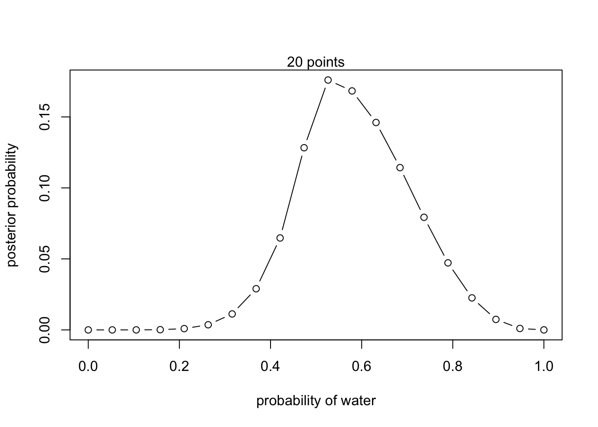
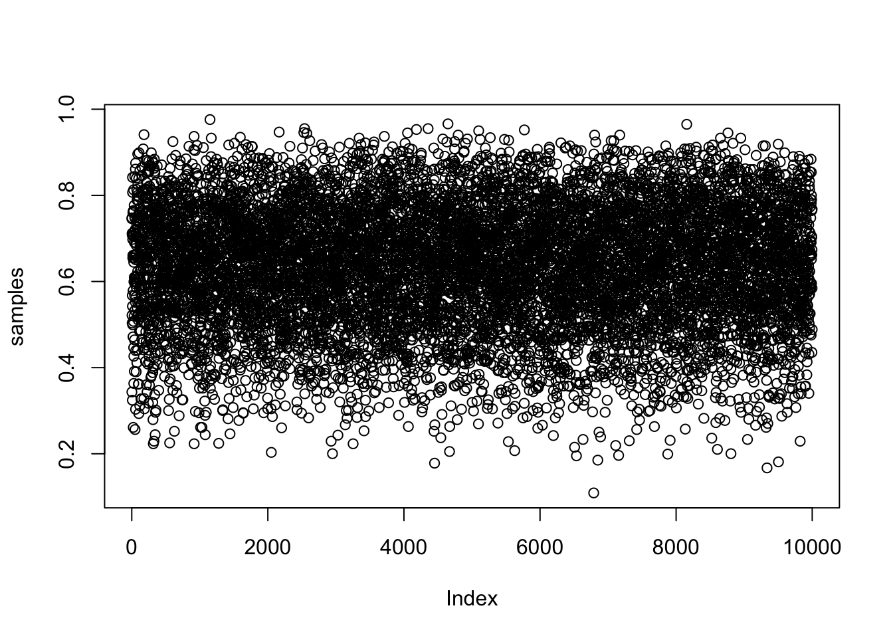
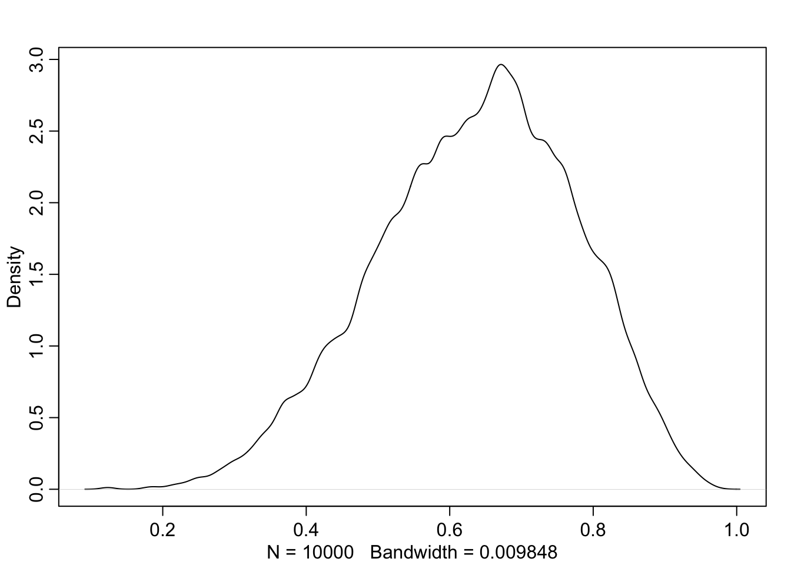
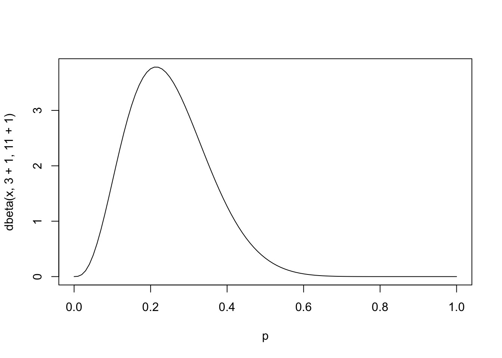

The core issue with frequentist stats is that it’s based on proving null hypotheses wrong. in reality, deductive falsification is impossible:
“(1) Hypotheses are not models. The relations among hypotheses and different kinds of models are complex. Many models correspond to the same hypothesis, and many hypotheses correspond to a single model. This makes strict falsification impossible.”
In order to try to falsify a hypothesis we have to create a model to approximate it, but all models are false - trying to falsify it doesn’t answer the hypothesis.
(2) Measurement matters. Even when we think the data falsify a model, another observer will debate our methods and measures. They don’t trust the data. Sometimes they are right.”
We need to use chance and uncertainty to discover reliable knowledge. All stats relies on this to some extent, but bayesian analysis embraces it most fully.
DAGS
There’s frequently a stats discourse between Bayes and Frequentist stats - we’re not going to talk about that at all really, just instead about “causal inference”
For statistical models to produce any scientific insight, they require additional scientific (causal) models. The reasons for a stats analysis are not found in the data, but instead in the causes of the data: causes can’t get extracted from the data alone, need an additional causal model. “no causes in, no causes out!”
What is causal inference?
more than association between variables - associations run both directions - there’s no causation in there.
instead, causal inference is a prediction of intervention - it’s the prediction of the consequences of changing one variable on the others
if you look outside and trees are swaying, you know that wind is causing the trees to sway. knowing the cause means being able to predict the consequences of an intervention. the “what if I do this?” question. There’s nothing within the data themselves to say that, you just know something extra.
or, can be thought of as the imputation.
knowing the cause means being able to construct unobserved counterfactual outcomes “what if I had done something else?”
Causes are not optional!
even when the goal is descriptive science, you still need a causal model: the sample differs from the population - describing the population requires causal thinking about why it’s different from the population
Now back to DAGS:
Directed Acyclic Graphs
they’re heuristic causal models that clarify scientific thinking - if you change an variable at the start of an arrow, it will change the thing at the end of the arrow: “What can we decide, without additional assumptions?”. These are the gateway to scientific modeling.
basically they’re letters with arrows between talking about what influences what.
different questions have different models - each causal query would require a different model.

comes down to choosing good control variables. there’s also bad controls - you can’t just add everything.
DAGS help you understand how to test/refine the causal model
GOLEMS
the golem of prague was built for a particular task but blind to the intent, so harm happened accidentally along the way - so he got decommissioned NO MORE GOLEM!
We’re also designing a lot of golems - we’re making statistical models that execute the instructions we give them but they’re blind to our intent. they’re powerful, they’re good, but they have no wisdom or foresight and applied in the wrong context they can be dangerous
we’re traditionally taught flowcharts of what to do with what types of data (if you have x type of data, use y test). But, this approach is limiting! focuses on rejecting null hypotheses, doesn’t teach the relationship between the research and the test.
We are doing observational work, and in these contexts null models are rarely unique. they don’t really work - what’s a null population dynamics model? This is apparently not sensible
SO! Research requires more than null robots. We’re making golems, so we’ll need: generative causal models (built on DAGs initially), and then use those to make statistical models justified by generative models and questions (called estimands, which are the quantities that we’re trying to estimate by statistical analysis). this is an effective way to produce estimates I guess.
Justifying “controls”
When looking at the above model, the relationships between the variables affecting any given variable make it hard to pick control variables. apparently we’ll later learn a way to pick which variables are right based on this to make up the “adjustment set” (I think, the ones to include?)
We have finite data but infinite problems. a DAG is not enough - we need a generative model to design inference. He thinks that the way to do this is a bayesian framework to get the best outcome with the least fuss.
Bayes is practical, not philosophical - in theory sometimes Bayes is overkill - in theory in simple analyses there’s little difference between frequentist stats and bayesian stats and bayes adds mess. but in REALITY, ecological analyses have a bunch of measurement error, missing data, latent variables, etc - and bayes handles this with less fuss!
He thinks the statistics wars are over on this point. Bayes is no longer controversial or marginalized - bayesian methods are routine, it’s just that we’re waiting for teaching to catch up.
OWLS!
this is our workflow!
he’s trying to teach us the intermediate steps between drawing some circles and drawing the rest of the owl. we’re going to try to document all the steps of drawing the owl as it were, and i think we’re going to do that using R.
drawing the bayesian owl:
necessary because scientific data analysis is like software engineering done by amateurs. We do a lot of scripting, which is a simple kind of programming, and should be treated as such!
three modes of drawing our owls:
understand what you’re doing - don’t just make code salad
document your work to reduce error
we also want to be able to produce a respectable scientific workflow
our basic owl steps:
outline a theoretical estimand (figure out what you want to know)
scientific (causal) models (this is like a formalized conceptual model, the DAG)/generative models (this is like what the math would actually look like written out)
use first two to build statistical models (statistical models are the bridge between declaring what you think is happening vs actually crunching the numbers)
then, use simulation from the generative model to validate that the statistical model yields our theoretical estimand
analyze the real data
Lecture 2 notes: The Garden of Forking Data
Okay, so in stats there is a small world and a big world. The small world is the self contained logical model of the world that we’re creating. The big world is the actual world - the broader context in which we deploy the model. Bayesian stats let’s us tidily pass back and forth between worlds, making our guesses and then updating them as we check them against how they perform in the big world.
We’re going to start by working in the small world.
he ways that bayesian inference works is that we are considering all of the things that could have happened in order to make good inference about what did happen. As we get more information about what did happen, we get to prune out some alternatives, refining our inference about what did happen. What it produces is ranked hypotheses - that can’t guarantee a correct answer, but it can help us do a good job of presenting our best possible answer based on the information we have.
As an example, We’re going to try to estimate the proportion of our earth that is covered by water, imagining that we have a globe that we can throw in the air, and that every time we catch the globe with one finger we mark down if it’s land or water. do that again and again to get a sample, use that to estimate the proportion of the surface that’s water.
Our estimand is the proportion of the globe that’s covered by water.
so:
how should we use the sample to get at the estimand to produce an estimate?
how to produce a summary of that?
and how to represent uncertainty of that estimate?
so:
1) define generative model of the sample
2) define a specific estimand
3) design a statistical way to produce an estimate
4) test 3) using 1)
5) analyze sample, summarize
step 1 - generative model of the globe
begin conceptually - how do the variables influence one another?
there’s p, the proportion of water
there’s N number of tosses
W number of water observations
L number of land observations
now want to write down the relationships between:
N influences W and L (more times you toss globe, bigger #s of W and L) so arrows from N to W and L representing causal influences (if you change N, W and L change)
p influences W and L (if there’s a different proportion, it would change the numbers of W and L)
the above is the written out DAG. to make this generative, you need to write out what the arrows mean exactly -
W,L = F(p,N)
this says that W and L are some function of p and N
Bayesian data analysis
for each possible explanation of the sample, count all the ways the sample could happen. Explanations with more ways to produce the sample are more likely to be true.
He calls this, the “Garden of Forking Data” - some of the things that happen in the process of sampling are from how we’re collecting the data, some are from natural processes, but they all influence the sample.
For each possible proportion of water on the globe, count all the ways the sample of tosses could happen. Proportions with more ways to produce the sample are more plausible.
Step 3 - design a statistical way to produce estimate
I think we’re now setting up how we could do this simply if we had a four sided globe

we have 5 possibilities for our globe, we did 3 tosses, got water land water.
you do this for each of the possibiliites (for 25% water shown below)

figure out what the options are (above) then,

You would do the same process for each of the different options (of the original five), to get the below:
the garden diagram literally becomes formulas:
then you can get more data by tossing your globe again, and then multiplying your previous counts by your new ways that each conjecture could produce the new datapoint.
so eventually if you have a bunch of data you have a bunch of data points to deal with:
in the above, the first number getting multiplied is the number of ways to get water multiplied by the number of observations of water. The second is the number of ways to get land in that scenario multiplied by the number of observations of land. so you then get to the formula at the bottom, which is that the number of observations of water and land are a function that looks like that. I got lost on that point but am choosing to try to be okay about that.
Now we’re talking about probability
Probability are non-negative values that sum to one. Suppose W = 20, L=10, then P=0.5 has 2W x 2L = 1,073,741,824 ways to produce sample - the numbers actually get crazy big super fast, so we convert to probability. I guess this is just to make it less messy in your computer bc the numbers get ridic so instead doing it by the proportion of 1 for the total is tidier:
the posterior distribution is posterior to the sample - it’s after collecting the data?
Some definitions that are also useful:
• A conjectured proportion of blue draws, p, is usually called a PARAMETER value. It’s just a way of indexing possible explanations of the data.
• The relative number of ways that a value p can produce the data is usually called a LIKELIHOOD. It is derived by enumerating all the possible data sequences that could have happened and then eliminating those sequences inconsistent with the data.
• The prior plausibility of any specific p is usually called the PRIOR PROBABILITY.
• The new, updated plausibility of any specific p is usually called the POSTERIOR PROBABILITY.
Step 4 - now test step 3 using step 1
we always want to test before we estimate. to do that, we first code a generative simulation, then code an estimator. then we test the estimator with the generative simulation. this makes the data that we can then use to run our formula which is asking about what the reality is based on the data we collect. so below, we’re making a function that produces some observations based on the proportion of water on our globe:
#function to toss a globe covered p by water N timessim_globe <-function (p =0.7, N=9){sample(c("W", "L"), #possible observationssize = N, #number tossesprob =c(p,1-p), #probability of each possible observationreplace =TRUE)}sim_globe()
sim_globe(p=1, N=11) #like, what if it's fully water, there should be no land!
[1] "W" "W" "W" "W" "W" "W" "W" "W" "W" "W" "W"
motto is test! all code has bugs! you don’t want the bugs to influence the results! the simulation needs to honestly represent the model you intend, so you test that first (i think above), THEN, you code the estimator and then test it using the simulation function. that’s below (we’re just writing the formula into an R function). so, we made some fake data above, and then we need to make an R function that uses the fake data to tell us about the probabilities of each original scenario being the reality based on the data we observed:
so you would then wrap sim_globe in the compute_posterior function. basically saying, with the data we got, what’s the likelihood of each of the original cases:
Now let’s build up some intuition to move from our 4 sided globe to 10 to 20 to infinity:
As you get more possibilities, the number of proportions increases, and the distribution smooths out across them - so the highest probability will get smaller as it gets spread out over more
Infitinite possibilties - so, the globe is a polyhedron with an infinite number of sides. the probability of any “side” p, is still proportional to pW (1-p)L . with some calculus, that takes us to the “Beta” distribution:
this distribution gives us the posterior probability of any particular value of p. the normalizing constant is there so that your probabilities sum to 1, and the second term is just the thing from before - # ways to observe sample
your posterior distribution is the estimate for the parameter after you’ve incorporated data from your prior. That’s your best estimate of whatever you’re trying to estimate. It can take any form. the beta distribution is the shape of the posterior that you want when you have a probability between 0 and 1 that you’re trying to estimate
now, we do ten tosses of our actual globe (note that when we do infinite possibilities we call it density instead of probability):
so you get a refining peak of your curve as you get more and more data from tossing again and again
some lessons from this!
with bayesian data, there’s no minimum sample size. don’t get confused from non-bayesian stats - bayesian inference is different in a lot of ways. every time you add more data/update, your estimate improves, but it is “correct” as an estimate based on the data you have available regardless of the sample size.
the shape of the curve embodies the sample size.
no point estimates in bayesian inference. you could for the sake of communication talk about points on the distribution, like its mode and mean, but neither of these points is special as a point estimate. You want to work with the whole distribution and use that to make your predictions. THE DISTRIBUTION IS THE ESTIMATE. ALWAYS USE THE ENTIRE DISTRIBUTION.
no one true interval. intervals are not important in bayesian inference, they’re just summaries of the distribition. the interval just communicates shape of the posterier - to use 95% is obvious superstition - nothing magical happens at the boundary. it’s still the shape of the whole distribution that matters!
Overview on the inside world:
Components of a bayesian model:
In the previous section, we counted three things:
(1) The number of ways each conjecture could produce an observation
(2) The accumulated number of ways each conjecture could produce the entire data
(3) The initial plausibility of each conjectured cause of the data
to count those things, we choose distributions and devices to represent the number of ways they can happen.
Variables
in our globe tossing example, there are three variables - the proportion of water, the number of water observations, and the number of land observations. the proportion can’t be observed, and is therefore called a parameter - but we can infer it from the other variables.
Definitions
For our observed water and land observations, we define the plausibility of that combination of observations for any specific value of the proportion of water. So that we don’t have to count, we can use a function that tells us the right plausibility. in non-bayes stats, these are called likelihoods: mathematical formulas that specify the plausibility of the data. It’s just the distribution function assigned to an observed variable. It tells you the probability of any possible observation for any possible condition of the (small) world. you can make your own from assumptions of my story for how the data would arise, or use one that are commonly used (which we’ll learn more about later). But for example, in our globe tossing analogy, we end up with a binomial distribution, because every toss is indpendent of the other tosses, and the probability of a water observation is the same on every toss - this is a common “coin tossing” distribution.
Sometimes, likelihoods are written L(p/w, n): the likelihood of p, conditional on wand n. Note however that this notation reverses what is on the left side of the | symbol. Just keep in mind that the job of the likelihood is to tell us the relative number of ways to see the data w, given values for p and n.
Can do this in R with the binomial function:
dbinom( 6 , size=9 , prob=0.5 )
[1] 0.1640625
the above is the relative number of ways to get 6 water observations if you sample 9 times if the probability of getting water is 0.5.
worth noting that the most influential assumptions in both bayesian and non-bayesian approaches are the likelihood functions and their relationships to the parameters!
Now, the distributions we assign to observed variables typically have their own, unobserved variables: the parameters. we still have to define those even though we can’t observe them. a Bayesian machine needs a defined Prior distribution for that parameter. Once you have a previous estimate that can become the prior (like when we kept rerunning with more globe tosses) - but at the start, it’s a little trickier to put in a good prior. We’ll get into that more in later chapters.
The key lesson is that the posterior is proportional to the product of the prior and the probability of the data. Why? Because for each specific value of p, the number of paths through the garden of forking data is the product of the prior number of paths and the new number of paths.
Motors
ok, so our model is a machine (a golem) and its built on definitions for liklihood, the parameters, and the prior. but at its heart is a motor that conditions the prior on the data. We’ll talk about three different conditioning engines:
(1) Grid approximation
Quadratic approximation
Markov chain Monte Carlo (MCMC)
Grid approximation
This is mostly useful to explain how bayes theory works, it’ll get replaced later by better tools (it can’t handle large amounts of data well). This works by, at any particular value of a parameter, mulitplying the prior probability of that value by the likelihood at that value. you repeat this for a selected grid of values and it approximates the exact posterior distribution. Here are the steps to do this, with r code:
# define grid (decide how many points you want and make a list of those parameter values)p_grid <-seq( from=0 , to=1 , length.out=20 )# define prior at each parameter value in gridprior <-rep( 1 , 20 )# compute likelihood at each value in gridlikelihood <-dbinom( 6 , size=9 , prob=p_grid )# compute product of likelihood and prior unstd.posterior <- likelihood * prior# standardize the posterior, so it sums to 1posterior <- unstd.posterior /sum(unstd.posterior)
# define grid (decide how many points you want and make a list of those parameter values)p_grid <-seq( from=0 , to=1 , length.out=20 )# define prior at each parameter value in gridprior <-ifelse( p_grid <0.5 , 0 , 1 )# compute likelihood at each value in gridlikelihood <-dbinom( 6 , size=9 , prob=p_grid )# compute product of likelihood and prior unstd.posterior <- likelihood * prior# standardize the posterior, so it sums to 1posterior <- unstd.posterior /sum(unstd.posterior)plot( p_grid , posterior , type="b" ,xlab="probability of water" , ylab="posterior probability" )mtext( "20 points" )
# define grid (decide how many points you want and make a list of those parameter values)p_grid <-seq( from=0 , to=1 , length.out=20 )# define prior at each parameter value in gridprior <-exp( -5*abs( p_grid -0.5 ) )# compute likelihood at each value in gridlikelihood <-dbinom( 6 , size=9 , prob=p_grid )# compute product of likelihood and prior unstd.posterior <- likelihood * prior# standardize the posterior, so it sums to 1posterior <- unstd.posterior /sum(unstd.posterior)plot( p_grid , posterior , type="b" ,xlab="probability of water" , ylab="posterior probability" )mtext( "20 points" )

Quadratic approximation
we’ll stick with grid approximation for this chapter and next, but we’ll need to upgrade in the future, because as parameters in models increase so do do the number of values you have to consider in the grid increases and then it gets wacky weird. quadratic approximation is an approach that you can use with some more success here - works bc near the peak of a posterior distribution it looks pretty normal? It doesn’t work very well with small sample sizes. I did not take detailed notes on how it works.
MCMC
once you get into multilevel (mixed effects) models, you’ve got crazy numbers of parameters. that means we’ve gotten funky with trying to do model fitting. One such is Mixed Chain Monte Carlo models (MCMC). it’s really not intuitive. THIS IS WHERE YOU SAMPLE FROM THE POSTERIOR! You end up with a collection of parameter values, and the frequencies of these values correspond to the posterior plausibilities. You can then build a picture of the posterior from the histogram of these samples.
Large World
Step 5 - analyze the sample and summarize!
From posterior distribution to prediction
implications of the model depend upon the entire posterior.
They must average any inference over the entire posterior
that normally requires integral calculus, OR we can just take samples from the posterior. to get a really good estimation of that integral without doing the calculus
library(rethinking)
Loading required package: cmdstanr
This is cmdstanr version 0.8.1.9000
- CmdStanR documentation and vignettes: mc-stan.org/cmdstanr
Typically 1000 samples from your posterior distribution is plenty to estimate
Now we’re trying to make predictions - so if you randomly sample any particular value of density from the posterior distribution based on the liklihood of seeing that value as described by the posterior distribution (so if the peak is around 0.7, you’re sampling more around 0.7s than farther #s).
I am still kind of lost on what the above is doing, but I think one key takeaway is that with bayesian stats the uncertainty is baked in and gets carried through at every step. you’re trying to take samples of the possible reality from the posterior distribution and expect what you would see if you tool more samples if the reality was that (predictive distribution for p) and then sample from that prediction to make a predictive model of the posterior based on the new data
The above chunk is broken for some reason but it produces the blue graph from the last image. the blue is the posterior predictive, which is more spread out than the predictive (black) because it considers more possibilities of p, better capturing the uncertainty
Sampling is a great way to get around the calculus problem and turn it into a data summary problem. MCMC methods only produces samples - you run your model, it returns samples, and we’ll learn how to process those.
Example from the book of this
How to compute the posterior from the globe model - posterior meaning the probability of p conditional on the data:
now we’re going to sample from this. we’ve got a bucket of these values - the values closer to the peak of the distribution are more common than those at the tails. so we’ll sample 10,000 times from the bucket:
samples <-sample( p_grid , prob=posterior , size=1e4 , replace=TRUE ) #sample is drawing values#p_grid is my parameter values#probability of each value is given by posterior, which I computed aboveplot( samples )

library(rethinking)dens( samples )

the above density is similar to the posterior distribution! good! right now we’ve just done this to replicate the posterior - not very useful. but now, we will use it to describe and understand the posterior:
questions we might ask include things about how much posterior probability lies between particular parameter values, etc.
# add up posterior probability where p < 0.5sum( posterior[ p_grid <0.5 ] )
[1] 0.1718746
this is simple but won’t work when there’s more than one parameter in the model? so we do it using the samples, which does work whenever. I guess that looks like counting all the samples below .5, but then dividing by the total # samples:
sum( samples <0.5 ) /1e4
[1] 0.1722
Skimmed the rest of this - my main takeaway is present the whole distribution whenever possible and find intentional ways to summarize it if absolutely necessary!
The other thing that sampling sets up well for is simulating predictions. you do this for 5 things usually:
you can sample not just from the posterior, but from the prior - to understand intentionally what it will do to use that prior.
check on your model - after you’ve updated it with data, it’s good to simulate implied observations to check if they fit well
validate your software by producing numbers under a known model and then try to recover the parameters the data were simulated under
design your research using power analysis
forecasting - make predictions and critique models
you can use bayesian models two ways - to guess at parameters, and to generate observations based on parameters - you can make dummy data with them to work with
I think this summarizes nicely the thing that was confusing me in the lecture:
I think in the above graph what we’re doing is progogating the uncertainty of p forward as we’re making predictions. so if we have our data and we summarize it with our posterior distribution, and then want to make guesses about what will happen based on that (envisioning birds flying at collision risk height?) and we want to progogate that uncertainty in p forward!
3E1. How much posterior probability lies below p = 0.2?
sum( samples <0.2 ) /1e4
[1] 4e-04
3E2. How much posterior probability lies above p=0.8 ?
sum( samples >0.8 ) /1e4
[1] 0.1116
3E3. How much posterior probability lies between p= 0.2 and p = 0.8 ?
sum( samples >0.2& samples <0.8) /1e4
[1] 0.888
3E4. 20% of the posterior probability lies below which value of p?
quantile( samples , 0.2 )
20%
0.5185185
3E5. 20% of the posterior probability lies above which value of p?
quantile( samples , 0.8 )
80%
0.7557558
3E6. Which values of p contain the narrowest interval equal to 66% of the posterior probability?
HPDI( samples , prob=0.66 )
|0.66 0.66|
0.5085085 0.7737738
3E7. Which values of p contain 66% of the posterior probability, assuming equal posterior probability both below and above the interval?
PI( samples , prob=0.66 )
17% 83%
0.5025025 0.7697698
summary of bayesian data analysis:
for each possible explanation of the data, count all the ways the data can happen. explanations with more ways to produce the data are more plausible.
Bayesian inference gives you no guarantees except that it’s logical. it does the best job it can taking those assumptions seriously. any stats framework that promises you more than this is hiding assumptions!
Bonus round - handling misclassification of data
In reality systems aren’t perfect, there’s also user error influencing data - what if you write it down wrong. So for example in our first DAG there could be another thing influencing the number of water observations beyond the number tosses and the proportion of water - that would be the amount mistakes you make recording data. he gets into an example for what to do with this
Week 1 Homework
Suppose the globe tossing data ( lec 2 chapter 2) had turned out to be 3 water and 11 land. construct the posterior distribution.
compute_posterior <-function(the_sample, poss =c(0, 0.25, 0.5, 0.75, 1)) { W <-sum(the_sample =="W") #number of water obs L <-sum(the_sample =="L") #number of land obs ways <-sapply(poss, function(q) (q*4)^W * ((1-q)*4)^L) post <- ways/sum(ways)data.frame(poss, ways, post =round(post, 3))}sample <-c("W", "W", "W", "L", "L", "L", "L", "L", "L", "L", "L", "L", "L", "L")compute_posterior(sample)
using the posterior distribution from 1, compute the posterior predictive distribution for the next 5 tosses of the same globe. Use the sampling method.
curve(dbeta(x, 3+1, 11+1), from =0, to =1, xlab ="p") #this plots the beta distribution from the above example, which is the same as the posterior. dbeta shows us the density.

p_samples <-rbeta(1e4, 3+1, 11+1) #we are pulling 1e4 samples from the beta distributionW_sim <-rbinom(1e4, size =5, p = p_samples) #r binomial takes the number of observations (we're doing 1000) and the number of trials in each observations (5 tosses) ad the probability of success in each trial which comes from the beta distribition from the posterior above. plot(table(W_sim)) #plot the samples